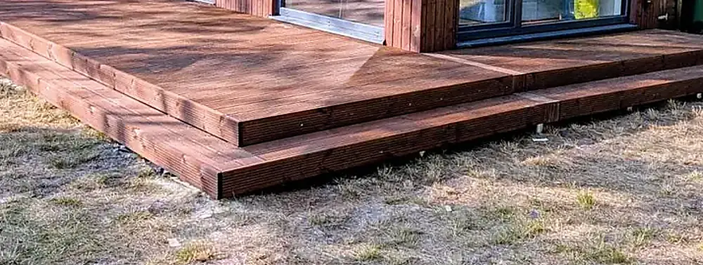
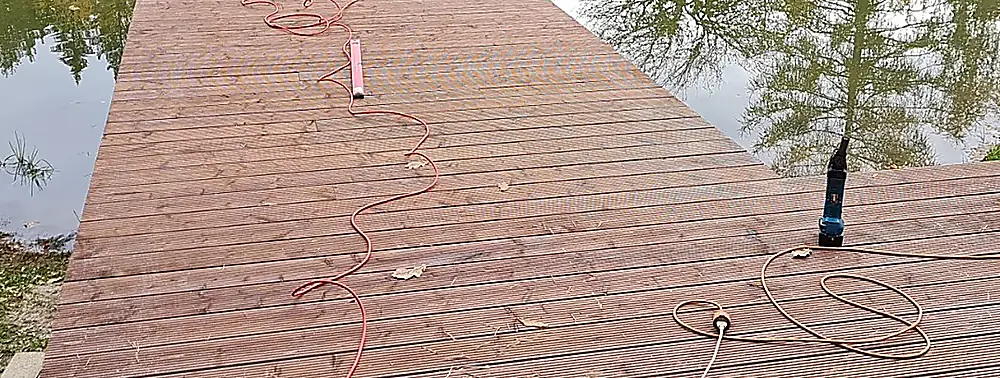
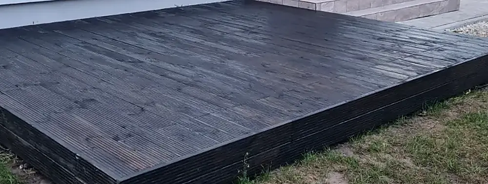
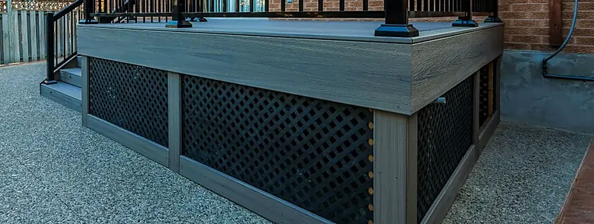
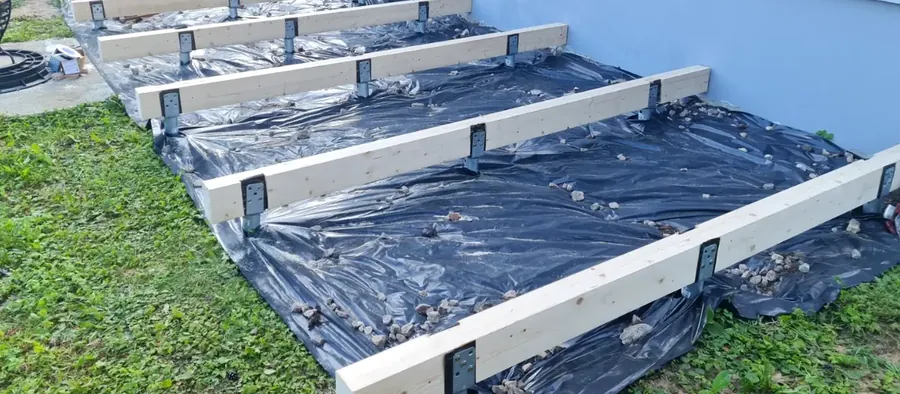
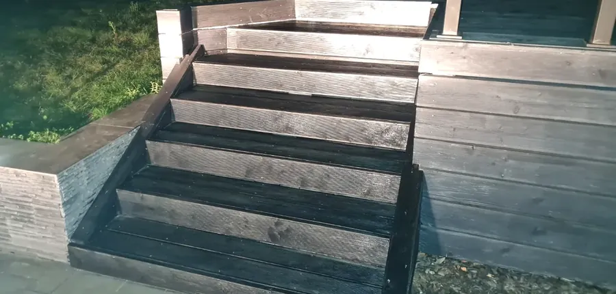

Terase ir vienīgā mājas daļa, kas visu gadu paliek ārā. Tāpēc mēs to būvējam kā konstrukciju, nevis kā segumu — sākot ar pamatiem, slīpumu un ventilāciju zem dēļiem, nevis ar materiāla paraugu.
Katrs projekts sākas ar apskati objektā: grunts, ūdens novade, mājas cokola augstums un tas, kur diena patiešām met ēnu. Materiālu izvēle nāk pēc tam — kad ir skaidrs, ko konstrukcijai būs jāiztur.
Šie ir materiāli, ar kuriem esam strādājuši līdz šim. Ja prātā ir kas cits — pasaki, un pielāgojamies. Materiālu parasti izvēlas klients; mēs atbildam par to, kā tas tiek ieklāts.

Termiski apstrādāta koksne. Uzņem mazāk mitruma, tāpēc mazāk vēršas un plaisā. Silti brūns tonis, kas bez eļļošanas ar gadiem kļūst sudrabpelēks.

Lapegle, ozols vai priede — dabisks tonis par zemāku cenu. Lai krāsa paliktu, klāju eļļo reizi sezonā.

Tā pati koksne ar pigmentētu eļļu: melns, grafīts vai pelēks. Tonis vienmērīgāks visā laukumā un noturīgāks pret sauli.

Koksnes un polimēra maisījums. Noturīgs pret mitrumu, sēnīti un UV — izvēle tur, kur terasi negribas kopt katru sezonu.
Pie terases pieder arī tas, kas nav klājs. Šo daļu plānojam kopā ar konstrukciju, nevis piebūvējam pēc tam.

Regulējamas atbalsta kājas, ventilēta zemtelpa un slīpums ūdens novadei — daļa, ko pēc tam neviens neredz, bet kas nosaka mūžu.

Tērauda vai koka margas, kāpnes pēc mēra un iebūvēts LED apgaismojums — elektrību ievelkam paši.
Izmēri, grunts, ūdens novade un saules puse. Bez maksas un bez pienākuma turpināt.
Izkārtojums, materiāli un konstrukcijas risinājums ar fiksētu cenu un termiņu.
Pamati, konstrukcija, segums un apdare. Objektu sakopjam katras dienas beigās.
Kopā pārstaigājam padarīto un atstājam īsu instrukciju, kā terasi kopt katru sezonu.
To pašu brigādi bieži lūdz arī citiem koka darbiem objektā.